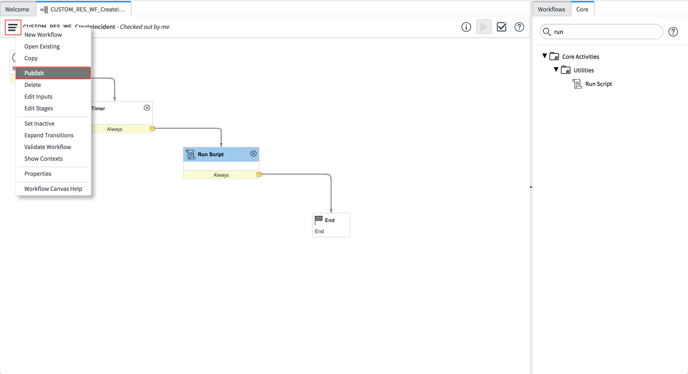

ServiceNow Customization Guide¶
This guide shows how to adapt the App installed on your ServiceNow instance to suit your Incident Response Workflow
Prerequisites¶
SOAR Platform updated to at least
v31.0.0or Cloud Pak for Security running at leastv1.9.0.App Host
>= 1.6.0or an Integration Server setup withresilient-circuits >= 31.0.0installed.All steps in the Installation Guide complete.
ServiceNow Instance with ITSM enabled and running a
Kingstonor later release.ServiceNow user with an
adminrole.A basic understanding of IBM SOAR Workflows.
A basic understanding of ServiceNow Workflows.
Architectural Diagram¶
Overview¶
When this App is installed, on your ServiceNow instance, you have access to the ResilientHelper class in any ServiceNow Workflow, UI Action or Script Include.
From the architectural diagram above, within ServiceNow, any SOAR action must start with a ServiceNow Workflow. ServiceNow Workflows are invoked from UI Actions or Business Rules.
This app comes with 4 pre-defined ServiceNow Workflows:
RES_WF_CreateIncident
RES_WF_CreateTask
RES_WF_AddComment
RES_WF_AddWorkNote
RES_WF_UpdateState
The ResilientHelper API helps create your own ServiceNow Workflows that use the ResilientHelper class to call SOAR Actions.
Pre-Defined ServiceNow Workflows¶
Each of the installed ‘out-of-the-box’
Workflowscontain aRun ScriptIt is in that
Run Scriptwhere we use the ResilientHelper class to invoke SOAR ActionsFollowing this is the code for each Run Script of the pre-defined workflows
Use this code for guidance along with the ResilientHelper API (below) when creating your own Custom Workflows
RES_WF_CreateIncident
(function RES_WF_CreateIncident(){
var resHelper, record, snRecordId, caseName, options, resSeverityMap, res, noteText, workNotes, workNotesSplit, severityMapped = null;
try {
//Instantiate new ResilientHelper
resHelper = new ResilientHelper();
//Get the required parameters to create an Incident
record = current;
snRecordId = record.getValue("number");
caseName = "SN: " + record.getValue("short_description") + " [" + snRecordId + "]";
//Map ServiceNow severity in digits to Resilient strings
//TIP: use the 'finfo' command on Resilient Integrations Server
//to get Resilient field information
resSeverityMap = {
"1": "High",
"2": "Medium",
"3": "Low"
};
severityMapped = resSeverityMap[record.getValue("severity").toString()];
//Initialize options
options = {
initSnNote: "Incident created in IBM SOAR",
optionalFields: {
"description": record.getValue("description"),
"severity_code": severityMapped
}
};
// Call helper to create the Incident in Resilient
res = resHelper.create(record, snRecordId, caseName, options);
if (res) {
// Create the initial RES Note
noteText = "<br>This " + res.res_reference_type + " has been sent from <b>ServiceNow</b>";
noteText += "<br><b>ServiceNow ID:</b> " + snRecordId;
noteText += '<br><b>ServiceNow Link:</b> <a href="'+res.snLink+'">'+res.snLink+'</a></div>';
resHelper.addNote(res.res_reference_id, noteText, "html");
// Get all Work Notes. Returns as a string where each entry is delimited by '\n\n'
workNotes = current.work_notes.getJournalEntry(-1);
//Split the Work Notes on '\n\n'
workNotesSplit = workNotes.split("\n\n");
//Loop each Work Note and add a Resilient Note
for (var i = 0; i < workNotesSplit.length; i++){
noteText = workNotesSplit[i];
if(noteText && noteText.length > 0){
resHelper.addNote(res.res_reference_id, workNotesSplit[i]);
}
}
}
}
catch (errMsg) {
current.work_notes = "Failed to create an Incident in IBM SOAR.\nReason: " + errMsg;
gs.error(errMsg);
}
})();
RES_WF_CreateTask
(function RES_WF_CreateTask(){
var resHelper, record, snRecordId, caseName, incidentId, options, res, noteText, workNotes, workNotesSplit = null;
try{
//Instantiate new ResilientHelper
resHelper = new ResilientHelper();
//Get the required parameters to create a Task
record = current;
snRecordId = record.getValue("number");
caseName = "SN: " + record.getValue("short_description") + " [" + snRecordId + "]";
incidentId = workflow.variables.u_ibm_resilient_incident_id;
//Initialize options
options = {
initSnNote: "Task created in IBM SOAR",
incidentId: incidentId,
optionalFields: {
"instr_text": record.getValue("description")
}
};
// Call helper to create the Incident in Resilient
res = resHelper.create(record, snRecordId, caseName, options);
if (res){
// Create the initial RES Note
noteText = "<br>This " + res.res_reference_type + " has been sent from <b>ServiceNow</b>";
noteText += "<br><b>ServiceNow ID:</b> " + snRecordId;
noteText += '<br><b>ServiceNow Link:</b> <a href="'+res.snLink+'">'+res.snLink+'</a></div>';
resHelper.addNote(res.res_reference_id, noteText, "html");
// Get all Work Notes. Returns as a string where each entry is delimited by '\n\n'
workNotes = current.work_notes.getJournalEntry(-1);
//Split the Work Notes on '\n\n'
workNotesSplit = workNotes.split("\n\n");
//Loop each Work Note and add a Resilient Note
for (var i = 0; i < workNotesSplit.length; i++){
noteText = workNotesSplit[i];
if(noteText && noteText.length > 0){
resHelper.addNote(res.res_reference_id, workNotesSplit[i]);
}
}
}
}
catch (errMsg){
current.work_notes = "Failed to create a Task in IBM SOAR for Incident "+incidentId+".\nReason: " + errMsg;
gs.error(errMsg);
}
})();
RES_WF_AddComment
(function RES_WF_AddComment(){
var resHelper, res_reference_id, noteText = null;
try{
//Instantiate new ResilientHelper
resHelper = new ResilientHelper();
//Get resilient_reference_id depending on what Table the record is in
res_reference_id = resHelper.getResilientReferenceId(current);
//Set noteText to last additional comment added
noteText = current.comments.getJournalEntry(1);
//Add a note in Resilient
resHelper.addNote(res_reference_id, noteText);
}
catch (errMsg){
current.work_notes = "Failed to add a note in IBM SOAR.\nReason: " + errMsg;
gs.error(errMsg);
}
})();
RES_WF_AddWorkNote
(function RES_WF_AddWorkNote(){
var resHelper, res_reference_id, noteText = null;
try{
//Instantiate new ResilientHelper
resHelper = new ResilientHelper();
//Get resilient_reference_id depending on what Table the record is in
res_reference_id = resHelper.getResilientReferenceId(current);
//Set noteText to last additional comment added
noteText = current.work_notes.getJournalEntry(1);
//Add a note in Resilient
resHelper.addNote(res_reference_id, noteText);
}
catch (errMsg){
current.work_notes = "Failed to add a note in IBM SOAR.\nReason: " + errMsg;
gs.error(errMsg);
}
})();
RES_WF_UpdateState
(function RES_WF_UpdateState(){
var resHelper, stateToColorMap, res_reference_id, snTicketState, snTicketStateColor, resolutionNotes = null;
try{
//Instantiate new resHelper
resHelper = new ResilientHelper();
//Map ServiceNow state to a color
//Colors accepted by resHelper.updateStateInResilient() = green/orange/yellow/red
stateToColorMap = {
"New": "green",
"In Progress": "orange",
"On Hold": "yellow",
"Resolved": "red",
"Closed": "red",
"Canceled": "red",
"Cancelled": "red",
// colors for security incidents states
"Draft": "green",
"Analysis": "orange",
"Contain": "yellow",
"Eradicate": "yellow",
"Recover": "yellow",
"Review": "red"
};
//Get resilient_reference_id depending on what Table the record is in
res_reference_id = resHelper.getResilientReferenceId(current);
snTicketState = current.state.getChoiceValue();
// Try get the snTicketStateColor that matches the snTicketState
try{
snTicketStateColor = stateToColorMap[snTicketState];
}
// If it does not exist, default to green
catch(errMsg){
snTicketStateColor = "green";
}
//Update that status in the res datatable
resHelper.updateStateInResilient(res_reference_id, snTicketState, snTicketStateColor);
//Add a note to the resilient incident/task stating the change
resHelper.addNote(res_reference_id, "ServiceNow Record state changed to: " + snTicketState);
//Get resolution notes if there are any
resolutionNotes = current.getValue("close_notes");
//Add a note to the resilient incident/task if there are resolution notes
if(resolutionNotes){
resHelper.addNote(res_reference_id, resolutionNotes);
}
}
catch(errMsg){
current.work_notes = "Failed to update state in IBM SOAR.\nReason: " + errMsg;
gs.error(errMsg);
}
})();
ResilientHelper API¶
create(GlideRecord record, String snRecordId, String caseName, Object options)¶
Creates an Incident/Task in SOAR.
Sets the the following Columns in ServiceNow:
x_ibmrt_resilient_ibm_resilient_reference_id(INC) ORx_ibmrt_resilient_ibm_soar_reference_id(SIR).x_ibmrt_resilient_ibm_resilient_type(INC) ORx_ibmrt_resilient_ibm_soar_type(SIR).x_ibmrt_resilient_ibm_resilient_reference_link(INC) ORx_ibmrt_resilient_ibm_soar_reference_link(SIR).
Adds a new row to the Data Table in SOAR.
Parameters:¶
Name |
Type |
Description |
|---|---|---|
record |
GlideRecord |
The current ServiceNow record |
snRecordId |
String |
Is the ID of the record, unique to its table. E.g. ‘INC123456’ |
caseName |
String |
The name of the Incident/Task to create in SOAR |
options |
Object |
There are 3 valid options that are all optional: |
Return:¶
Returns an object with the following keys:
Key |
Type |
Description |
|---|---|---|
res_reference_id |
String |
Unique ID relative to the Incident/Task created in SOAR. E.g: RES-1234-100001 |
res_reference_link |
String |
A link to the Incident/Task in SOAR |
res_reference_type |
String |
The type of case created in SOAR. Incident/Task |
snLink |
String |
A link to the ServiceNow Record |
addNote(String res_reference_id, String noteText, String noteFormat)¶
Creates a note in SOAR.
Parameters:¶
Name |
Type |
Description |
|---|---|---|
res_reference_id |
String |
Unique ID relative to the Incident/Task created in IBM SOAR. E.g: RES-1234-100001 |
noteText |
String |
The text of the note |
noteFormat |
String |
Format of the note to create. Can be |
Return:¶
Does not return anything.
updateStateInResilient(String res_reference_id, String snTicketState, String snTicketStateColor)¶
Updates the
servicenow_statuscolumn in the Data Table in IBM SOAR with thesnTicketState.
Parameters:¶
Name |
Type |
Description |
|---|---|---|
res_reference_id |
String |
Unique ID relative to the Incident/Task created in IBM SOAR. E.g: RES-1234-100001 |
snTicketState |
String |
The current state of the record. E.g.: ‘In Progress’ |
snTicketStateColor |
String |
Accepted values: |
Return:¶
Does not return anything.
getResilientReferenceId(GlideRecord record)¶
Gets the IBM SOAR Reference ID for a linked record.
Parameters:¶
Name |
Type |
Description |
|---|---|---|
record |
|
|
Returns:¶
A string containing the Reference ID of the SOAR record.
getResilientReferenceLink(GlideRecord record)¶
Gets the SOAR Reference Link to directly access the record in SOAR.
Parameters:¶
Name |
Type |
Description |
|---|---|---|
record |
|
|
Returns:¶
A string containing the URL link of the SOAR record.
getResilientType(GlideRecord record)¶
Gets the SOAR Type for a linked record (i.e. “Incident” or “Task”).
Parameters:¶
Name |
Type |
Description |
|---|---|---|
record |
|
|
Returns:¶
A string containing either “Task” or “Incident” indicating the type of record linked in SOAR.
Create Own Custom ServiceNow Workflow¶
A Custom Workflow can be created to overwrite the above pre-defined workflows.
To have your custom workflow be invoked instead of a pre-defined workflow, use must use the correct naming convention.
For example, to overwrite the Add Comment workflow, you would create a workflow with the name: CUSTOM_RES_WF_AddComment.
Follow the steps below as a guide to create your own Custom Workflow.
Step 1: Use Correct Application Scope¶
In ServiceNow, click the gear icon in the top right corner.
Click Developer in the menu.
Ensure:
Application: IBM Security QRadar SOAR.
Update Set: Default [IBM Security QRadar SOAR].
Close the popup.
Step 2: Create a Copy of Existing RES Workflow¶
Using the Navigation Panel, open the Workflow Editor:

On the right-hand side of the Workflow Editor, search for res_wf:
Click the Workflow you want to overwrite. The Workflow opens.
Click the Burger Menu on the top left and then Copy:

In the popup enter the Workflow Name. Ensure you use the correct naming convention:
CUSTOM_<original_workflow_name>:
Click OK.
Step 3: Modify the Run Script¶
Double click the Run Script:
In the popup that appears, copy the below script and paste it into the Script Editor:
(function RES_WF_CreateIncident(){ var resHelper, record, snRecordId, caseName, options, resSeverityMap, res, noteText, workNotes, workNotesSplit, severityMapped = null; try { //Instantiate new ResilientHelper resHelper = new ResilientHelper(); //Get the required parameters to create an Incident record = current; snRecordId = record.getValue("number"); caseName = "SN: " + record.getValue("short_description") + " [" + snRecordId + "]"; //Map ServiceNow severity in digits to Resilient strings //TIP: use the 'finfo' command on Resilient Integrations Server //to get Resilient field information resSeverityMap = { "1": "High", "2": "Medium", "3": "Low" }; severityMapped = resSeverityMap[record.getValue("severity").toString()]; //Initialize options options = { initSnNote: "Incident created in IBM SOAR", optionalFields: { "description": record.getValue("description"), "severity_code": severityMapped } }; // Call helper to create the Incident in Resilient res = resHelper.create(record, snRecordId, caseName, options); if (res) { // Create the initial RES Note noteText = "<br>This " + res.res_reference_type + " has been sent from <b>ServiceNow</b>"; noteText += "<br><b>ServiceNow ID:</b> " + snRecordId; noteText += '<br><b>ServiceNow Link:</b> <a href="'+res.snLink+'">'+res.snLink+'</a></div>'; resHelper.addNote(res.res_reference_id, noteText, "html"); // Get all Work Notes. Returns as a string where each entry is delimited by '\n\n' workNotes = current.work_notes.getJournalEntry(-1); //Split the Work Notes on '\n\n' workNotesSplit = workNotes.split("\n\n"); //Loop each Work Note and add a Resilient Note for (var i = 0; i < workNotesSplit.length; i++){ noteText = workNotesSplit[i]; if(noteText && noteText.length > 0){ resHelper.addNote(res.res_reference_id, workNotesSplit[i]); } } } } catch (errMsg) { current.work_notes = "Failed to create an Incident in IBM SOAR.\nReason: " + errMsg; gs.error(errMsg); } })();
Edit the workflow script as fits your needs.
Click Submit.
Publish your Workflow, by clicking the burger menu then clicking Publish: 
Close the tab that contains the Workflow Editor.